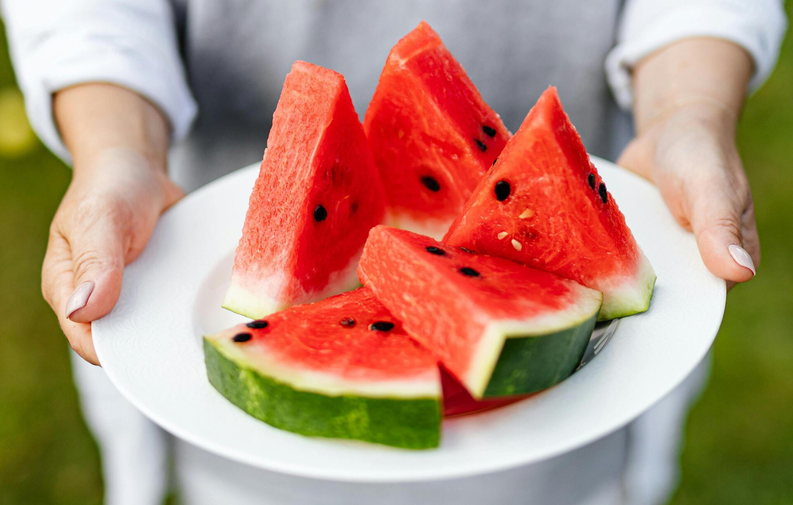

Fruits

Fruits are a great source of quick energy and a sweet taste! Most fruit require no cooking and are ready to eat once you finish cutting them up. Smaller fruits are easier to cut up like strawberries, apples, peaches, plums, necterines, and more. Bigger fruits like watermelon, canteloupe, pineapple, and honeydew are a bit harder. Fruits like blueberries, raspberries, blackberries, and grapes require little to no prep work and are ready to eat. Bananas, oranges, and grapefruit just need to be peeled.

